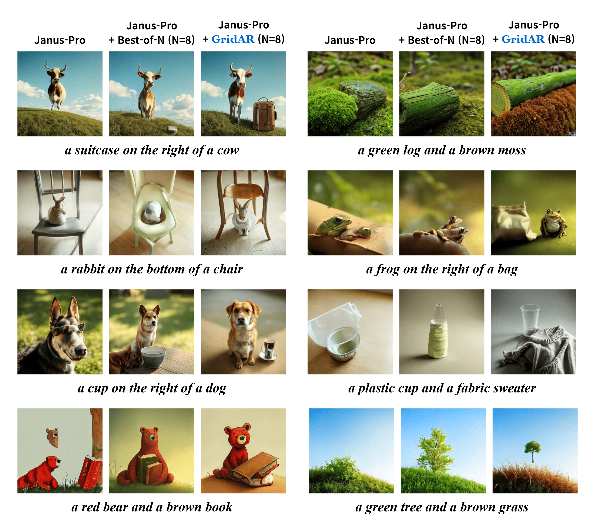
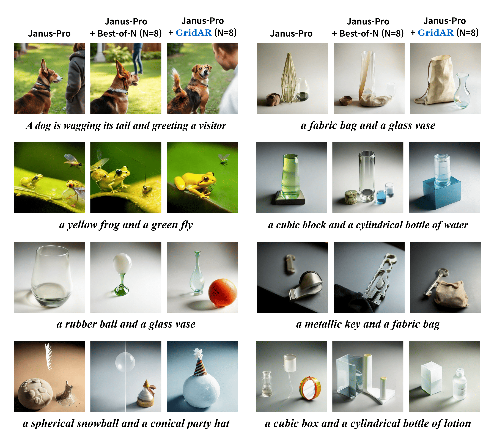
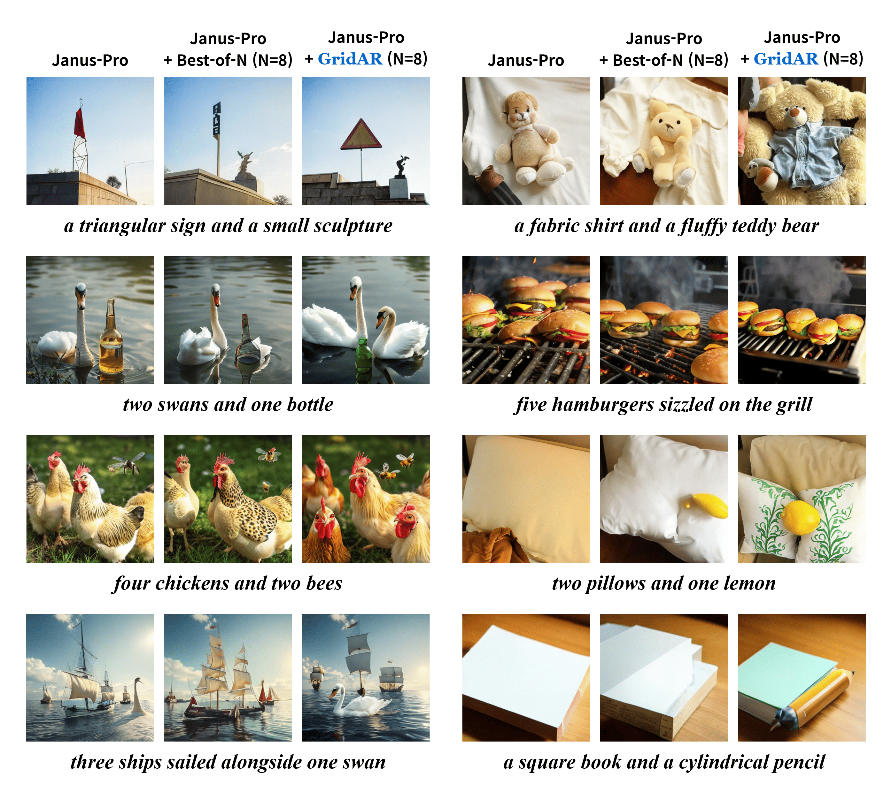
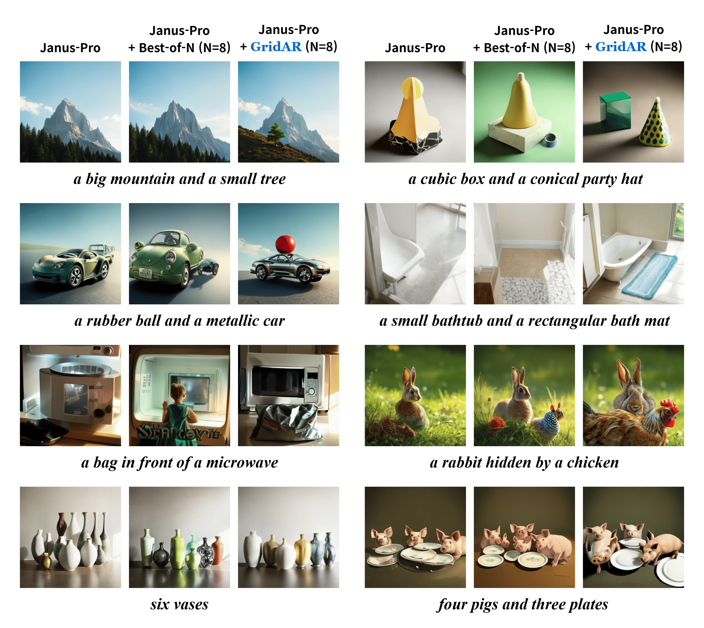
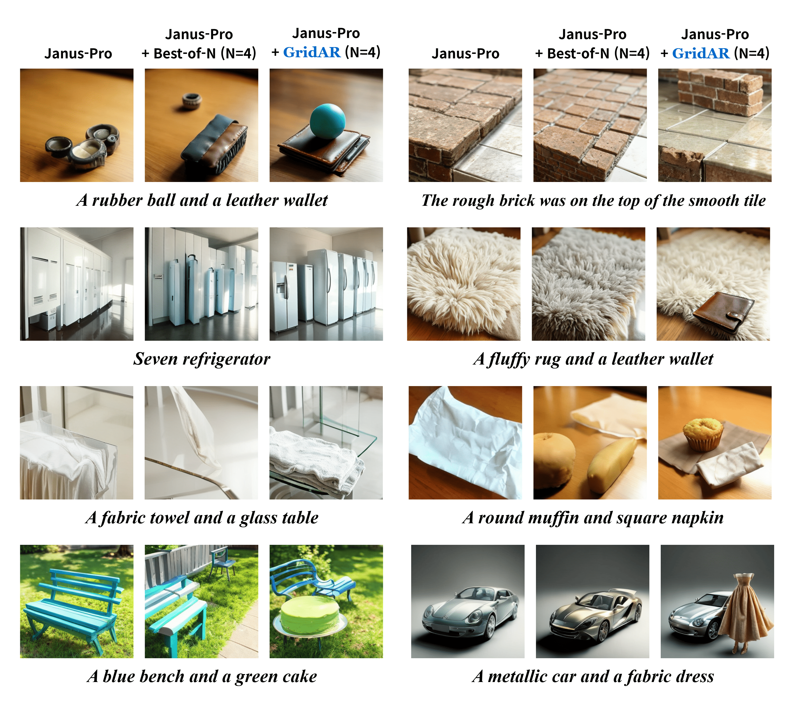
Qualitative (Text-to-Image). We compare single generation, Best-of-N (N=4), and GridAR (N=4). GridAR yields cleaner object counts, tighter attribute binding, and more faithful spatial layouts.
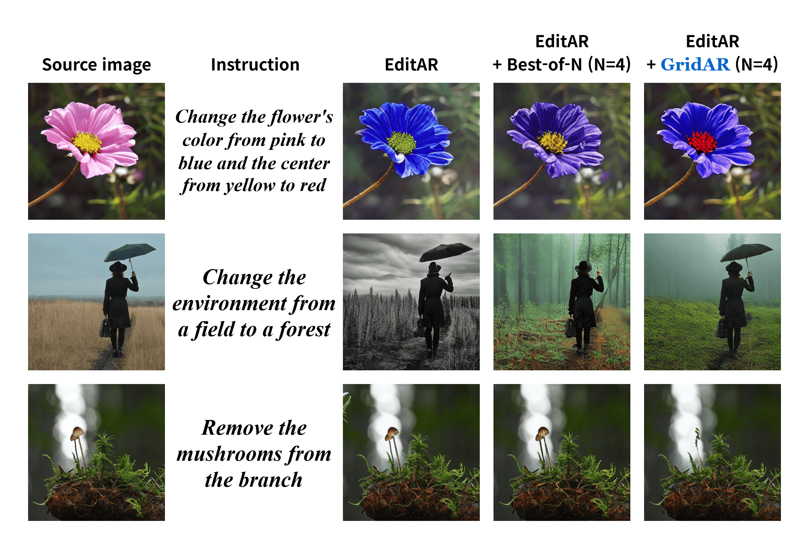
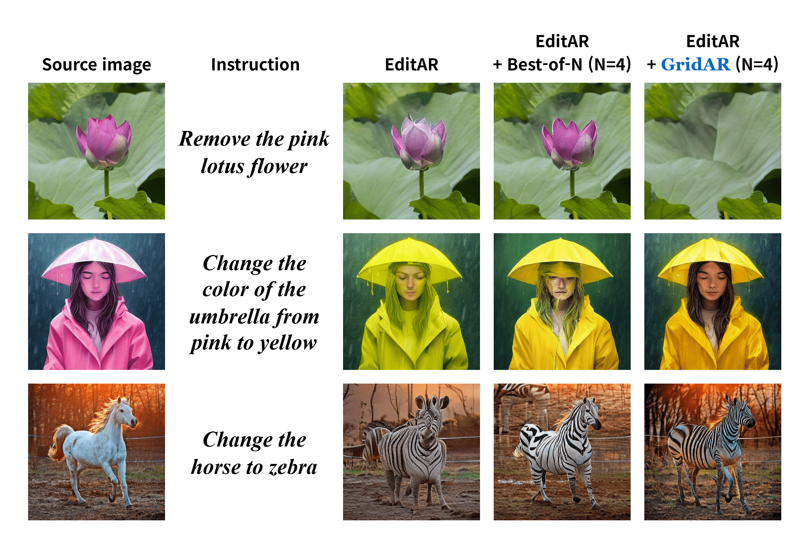
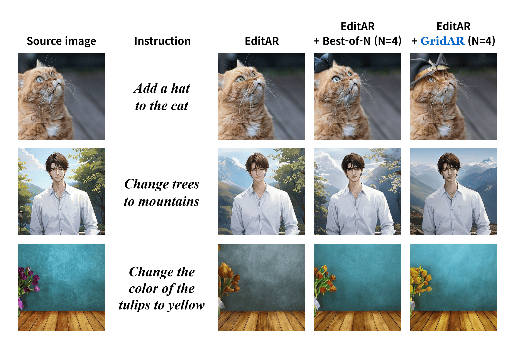
Qualitative (Image Editing). GridAR realizes the edit instruction while preserving background structure, reducing artifacts and keeping scene layout.
Recent visual autoregressive (AR) models have shown promising capabilities in text-to-image generation, operating in a manner similar to large language models. While test-time computation scaling has brought remarkable success in enabling reasoning-enhanced outputs for challenging natural language tasks, its adaptation to visual AR models remains unexplored and poses unique challenges. Naively applying test-time scaling strategies such as Best-of-N can be suboptimal: they consume full-length computation on erroneous generation trajectories, while the raster-scan decoding scheme lacks a blueprint of the entire canvas, limiting scaling benefits as only a few prompt-aligned candidates are generated. To address these, we introduce GridAR, a test-time scaling framework designed to elicit the best possible results from visual AR models. GridAR employs a grid-partitioned progressive generation scheme in which multiple partial candidates for the same position are generated within a canvas, infeasible ones are pruned early, and viable ones are fixed as anchors to guide subsequent decoding. Coupled with this, we present a layout-specified prompt reformulation strategy that inspects partial views to infer a feasible layout for satisfying the prompt. The reformulated prompt then guides subsequent image generation to mitigate the blueprint deficiency. Together, GridAR achieves higher-quality results under limited test-time scaling: with N=4, it even outperforms Best-of-N (N=8) by 14.4% on T2I-CompBench++ while reducing cost by 25.6%. It also generalizes to autoregressive image editing, showing comparable edit quality and a 13.9% gain in semantic preservation on PIE-Bench over larger-N baselines.
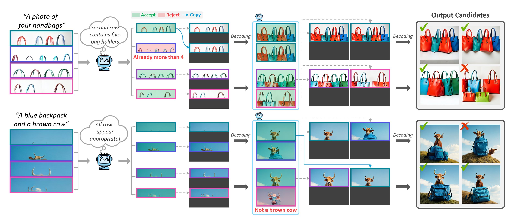
Grid-based progressive generation. GridAR partitions the canvas and explores multiple partial continuations in parallel. At the first stage, we create several quarter-image candidates from the same prompt and immediately prune those that violate the instruction. The remaining “anchors” are fixed and propagated to the next stage, where the lower halves are completed. By allocating compute to promising branches and stopping doomed ones early, GridAR expands the effective search space without retraining.
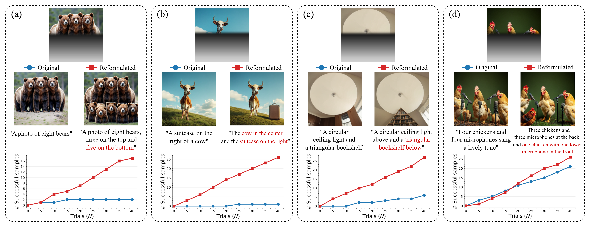
Layout-specified prompt reformulation. Raster-scan AR decoding lacks a global blueprint, so later regions often over/under-count objects or misplace attributes. After verifying the partially generated canvas, we rewrite the prompt to encode an explicit, feasible layout implied by the anchors (e.g., counts, relative positions). This mid-generation reformulation steers subsequent decoding and mitigates the “blueprint deficiency,” yielding more instruction-aligned images under the same test-time budget.
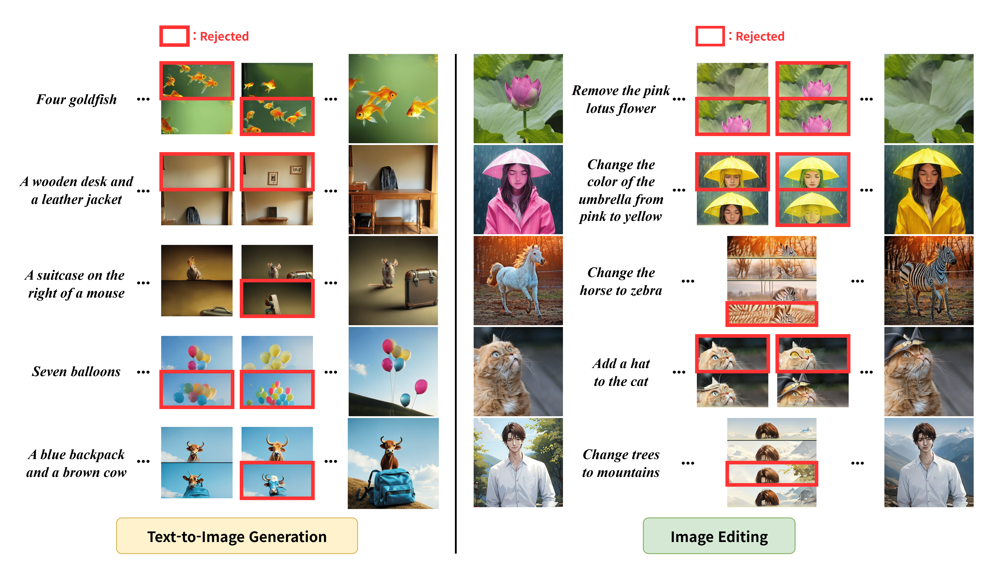
Examples of rejected grids. Our verifier filters out candidates that are incompatible with the prompt, especially at later stages where inconsistencies become clearer. The figure shows typical rejects (object miscounts, attribute swaps, spatial violations).
We evaluate GridAR on two tasks with visual AR models: (1) Text-to-Image (T2I) Generation, and (2) Image Editing. For T2I generation, we report results on T2I-CompBench++ and GenEval. For editing, we use PIE-Bench with dual goals of instruction following and source preservation.
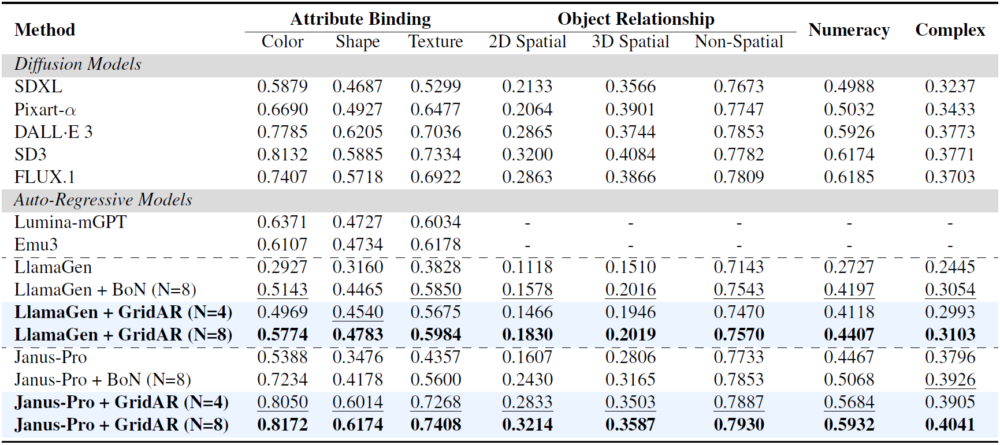
Text-to-image Generation (T2I-CompBench++). Under the same number of candidates, GridAR consistently surpasses Best-of-N by directing computation to viable continuations. Notably, with only N=4, GridAR can outperform Best-of-N at N=8 while using less compute. Gains are most pronounced on compositional categories (counts, spatial relations, attribute binding), indicating better global consistency.
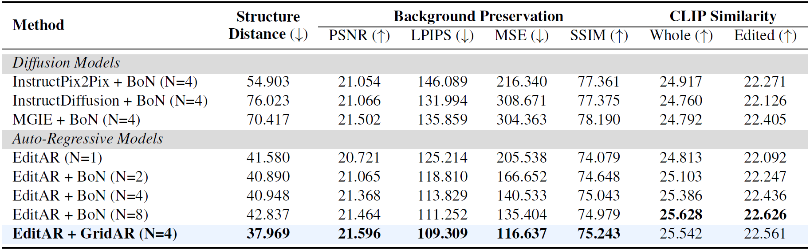
Image editing (PIE-Bench). When applied to an AR editor, GridAR achieves strong instruction following with markedly improved source preservation. Compared to larger-N baselines, it attains comparable or higher CLIP similarity on the edited region while reducing structure distortion (DINO-ViT distance) and pixel-level errors (e.g., MSE/LPIPS). This highlights GridAR’s compute-efficient edits without sacrificing fidelity.